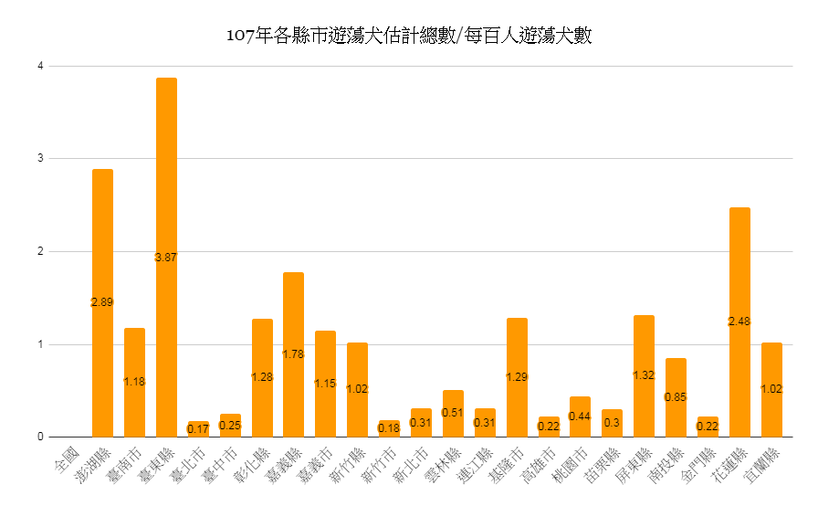
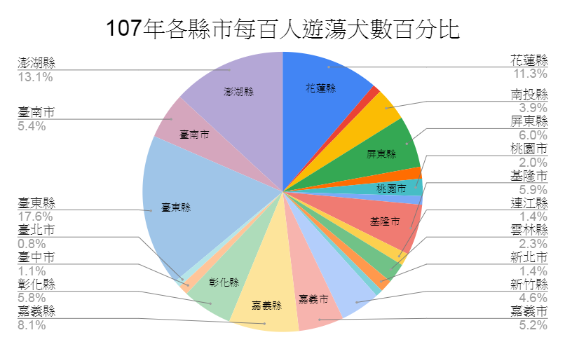

領養需知
- 一、申請人：年滿20歲的民眾。未滿20歲者，須以法定代理人或法定監護人為飼主。
- 二、申請步驟：
- （一）申請人應攜帶身分證明文件，填寫領養申請書。
- （二）承辦人員應核對認養人的身分證明文件，必要時得親自實地勘察。
- （三）待認養動物條件：於收容所留置超過7日且無飼主認領或無身分標識者，並經過本處健康行為評估適於認養者。
- （四）符合認養人資格者，經由管理人員協助，於可認養動物中，自行挑選合適的動物。
- （五）繳交相關規費：晶片植入手續費250元、狂犬病預防注射費200元。
- （六）未實施晶片植入、狂犬病預防注射及寵物登記之動物，應於完成晶片植入、狂犬病預防注射及寵物登記後才得以放行。只有8週齡以下幼犬暫時不用施打狂犬病疫苗。
- （七）認養的動物自領出日起1個月內，若因任何原因無法續養，可將該動物交還本所，填寫「不擬續養動物申請切結書」放棄該動物的所有權，並送回寵物登記證及狂犬病預防注射證明辦理註銷。認養時所繳交的費用一概不退還。
認養程序
接觸
與貓狗第一次接觸：
並參訪貓舍犬舍，從候選貓狗卡中挑選喜歡的貓狗，與選擇的貓狗來個初次相遇。
辦理
抽取資料卡(綠卡)至櫃檯辦理認養手續
申請
填寫並核對申請書及身份證件、繳交其所需的費用。
健檢
動物健康檢查：
由獸醫師進行健康檢查，並將晶片植入、狂犬病預防疫苗注射及辦理寵物登記。
諮詢
諮詢協助服務：
接受櫃台服務人員的認養前諮詢及協助管道的提供，必要時派遣專業人員實施家庭訪問。
回家
帶新朋友回家：
帶已認養的動物回家，戴上新的項圈及扣上牽繩，您就可以帶新朋友回家。
陪伴
帶毛小孩回家後，多多的陪伴、照顧毛小孩，每個毛小孩都期盼能與主人有美好的時光。
收容所數據

數據來源：動物保護資訊網 圖表製作：團隊自行製作
若又以每百人數據做百分比分析，臺東縣在占比當中也有16.8%，可見在東部縣市問題的嚴重性。
數據來源：動物保護資訊網 圖表製作：團隊自行製作